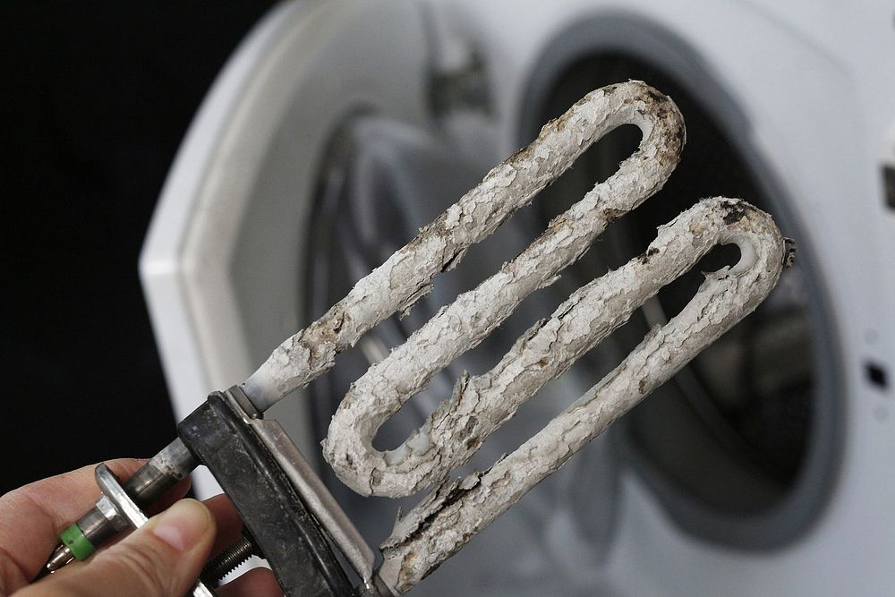
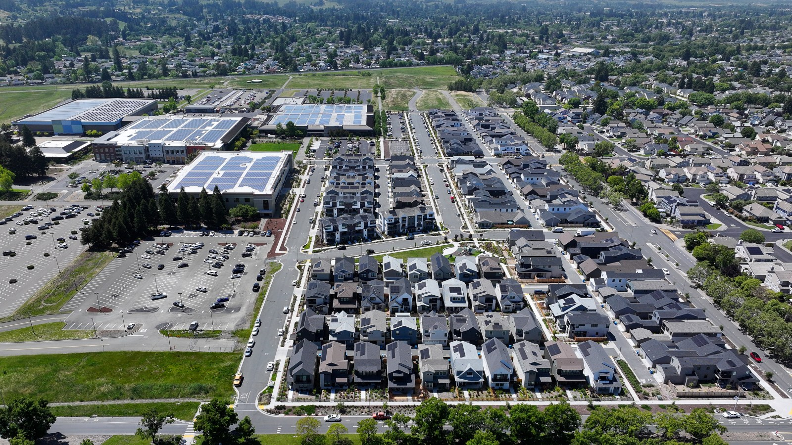
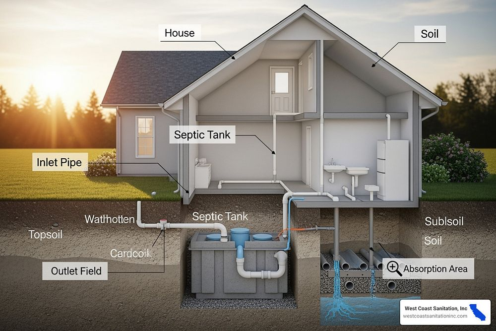

5.0 Rating
18 Google reviews from local homeowners
CNTRline Plumbing is a licensed, insured plumber based in Rohnert Park, right in the heart of Sonoma County. Since 2017, we've worked on homes across the county, from Santa Rosa and Petaluma to Healdsburg and Sebastopol. Whether you're dealing with a burst pipe, a failing water heater, or aging galvanized lines, we give you a straight answer and a fair price before we start.
18 Google reviews from local homeowners
California CSLB #1036920
Sonoma & Marin County, 7 days a week
Available for emergencies, no waiting
From our shop at Raley's Town Center in Rohnert Park, we cover the full span of central Sonoma County, north to Windsor and Healdsburg, south through Cotati and Petaluma, and west to Sebastopol. Every city we serve has its own plumbing personality shaped by its water source, housing era, and infrastructure age. Here's what drives the work we see most.

Sonoma County tap water runs moderately hard, about 5.5 grains per gallon in Santa Rosa, sourced from Russian River groundwater through Sonoma Water. That mineral scale settles at the bottom of tank water heaters and inside fixtures, cutting heater life well short of the 12-year mark. Water heater flushing, repair, and replacement are among our most common calls across the county.

The 2017 Tubbs Fire destroyed over 1,400 homes in Santa Rosa's Coffey Park neighborhood alone. That side of the city is now rebuilt with modern PEX supply lines and code-compliant gas. Right next door, original 1950s to 1980s tract homes still run galvanized supply lines and aging sewer laterals. We work both ends of the spectrum, from a simple drain cleaning to a full whole-house repipe.

Beyond the city edges, around Penngrove, rural Sebastopol, and the Sonoma Mountain foothills, many homes rely on private wells and septic systems instead of city utilities. That means pressure tanks, well supply lines, and the plumbing that feeds a leach field. We handle all of it, and we know the local permit requirements before you dig or sell.
A burst pipe or a failed water heater doesn't wait for Monday morning, and neither do we. From our Rohnert Park location, we can reach most of central Sonoma County within about 30 minutes. We answer calls and texts every day of the week, including weekends and holidays, so you're never left without options when something goes wrong.
We diagnose the problem, explain what it will take to fix it, and give you a real price before any work begins. No surprise invoices, no pressure.
For emergencies in Santa Rosa, Cotati, Petaluma, Windsor, and surrounding communities, we're typically on-site the same day, often within the hour.
Call (707) 308-5599 any day of the week and you'll reach someone who can actually help, not a call center or an automated queue.
Our Services
From routine maintenance to full repipes and emergency response, CNTRline Plumbing handles the full spectrum of residential and commercial plumbing. Below are the services we perform most frequently across Sonoma County, each one backed by licensed, insured technicians who know the local homes and infrastructure.
Tank and tankless units. We handle same-day replacement for failed heaters, flushing for scale buildup, and new installs for energy-efficient upgrades.
Clogged sinks, tubs, showers, and main lines cleared fast using professional-grade equipment, with no guesswork and no repeated callbacks.
Leak detection and repair, new line additions, appliance hookups, and full gas main replacement, all done to California code.
Camera video inspection to pinpoint problems, followed by spot repair or full sewer line replacement, minimizing disruption to your yard and landscaping.
Faucets, sinks, toilets, and shower valves installed, repaired, or replaced. We work with all major brands and handle both cosmetic and functional issues.
Burst pipes, no-water situations, and active leaks. We respond 7 days a week and prioritize getting your home stabilized fast.
Service line leaks located and fixed from the meter to the house. We handle everything from pinhole leaks to full main line replacements, with permits handled correctly.
Galvanized pipe removed, copper or PEX installed. Most homes are completed in 2 to 4 days with minimal disruption. A smart long-term investment for older homes.
Restaurants, offices, retail spaces, and property managers. We handle service contracts, routine maintenance, and urgent repairs for commercial properties across the county.
Coverage Area
Pick your city for local details on the homes, the water quality, and the most common plumbing jobs we handle there, or just call and we'll come to you. Our Rohnert Park base puts us within easy reach of every community listed below.
Our home base. Fast response times throughout the city and surrounding neighborhoods.
Coffey Park rebuilds, older tract homes, and everything in between. We work all of Santa Rosa.
Mixed-age housing stock with a range of drain, sewer, and water heater needs.
Close to our shop. Quick response for routine service and emergency calls alike.
Newer subdivisions and established neighborhoods. We handle service across all of Windsor.
Older downtown homes and newer properties north of Santa Rosa, including wine country estates.
Rural properties with wells, septic systems, and pressure tanks. We know this territory well.
North county coverage including Geyserville and surrounding rural communities.
Santa Rosa and much of Sonoma County draw water from Russian River groundwater managed by Sonoma Water. That source runs moderately hard, about 5.5 grains per gallon, and the mineral content has real consequences for the plumbing in your home.
At 5.5 grains per gallon, Sonoma County water sits in the moderate-to-hard range on the water hardness scale. Calcium and magnesium minerals dissolve naturally into groundwater as it moves through rock and soil. By the time it reaches your tap, it carries enough mineral content to leave deposits inside water heaters, on faucet aerators, around showerheads, and inside appliance supply lines.
Sediment accumulates at the bottom of tank water heaters over time, acting as insulation between the burner and the water. The heater works harder, uses more energy, and wears out faster, often well before the 12-year mark. Scale also narrows fixture openings and reduces flow. Regular flushing extends heater life, but many units we're called out to replace simply weren't maintained with local water conditions in mind. We've seen this pattern consistently since 2017, which is why water heater work makes up a large share of our calls throughout the county.
Sonoma County's housing stock tells two very different stories, and understanding both is essential to diagnosing plumbing problems correctly. CNTRline works on homes from both eras every week.
A large portion of Sonoma County's residential neighborhoods were built between the postwar boom and the early 1980s. These homes commonly feature galvanized steel supply lines that corrode from the inside out over decades, reducing water pressure and eventually failing. Sewer laterals from this era are often made of clay or cast iron, materials prone to cracking, root intrusion, and joint failure. Many homeowners in these homes don't know what they have underground until a backup or a camera inspection reveals the full picture. We handle repipes, sewer line repair, and full lateral replacements for this housing stock regularly throughout Santa Rosa, Petaluma, and Cotati.
The 2017 Tubbs Fire destroyed over 1,400 homes in Coffey Park alone, and the rebuilding effort produced entire blocks of modern construction virtually overnight. These newer homes use PEX flexible supply tubing and modern gas line installations built to current California code. PEX is durable, freeze-resistant, and far more corrosion-proof than galvanized pipe. However, even new construction benefits from professional service, including fixture installs, appliance hookups, and expansion as homeowners add outdoor kitchens, ADUs, or upgraded bathrooms. We work both sides of the street in Coffey Park and throughout the wider Santa Rosa rebuild zone.
Not every Sonoma County home connects to city water and sewer. In the areas past the urban edges, particularly around Penngrove, rural Sebastopol, and the Sonoma Mountain foothills, private wells and septic systems are the norm. These properties have unique plumbing needs that go well beyond standard city-connected service calls.
A failing pressure tank can cause your pump to short-cycle, turning on and off rapidly, which dramatically shortens pump life and creates inconsistent water pressure throughout the house. We service and replace pressure tanks, inspect well supply lines for leaks and deterioration, and troubleshoot low-pressure complaints that are often misdiagnosed as a fixture problem when the real issue is upstream at the tank or pump.
The plumbing that feeds a septic field, from the house drain to the distribution box and leach lines, requires careful attention to slope, pipe condition, and connection integrity. We handle the plumbing side of septic systems, including inspections ahead of property sales, repairs to inlet lines, and work on distribution components. We know the local permit requirements that apply before any digging begins.
Sonoma County requires permits for most plumbing work that involves trenching, new connections, or modifications to well and septic systems. Skipping permits creates problems at resale and can result in costly corrections. We pull the right permits, schedule inspections, and make sure the work is documented correctly, protecting your investment and your ability to sell the property cleanly in the future.
These are the questions we hear most from homeowners and property managers across the county. Straight answers, the same ones you'd get if you called us directly.
Yes, moderately. Santa Rosa and most of the county run at about 5.5 grains per gallon, sourced from Russian River groundwater managed by Sonoma Water. That level of hardness is enough to cause meaningful scale buildup inside water heaters and on fixtures over time. We flush and replace a lot of heaters across the county for exactly this reason, and we recommend annual flushing for tank units to slow sediment accumulation and extend heater life.
Yes. Around Penngrove, rural Sebastopol, and the Sonoma Mountain area we regularly work on pressure tanks, well supply lines, and the plumbing that connects homes to septic systems. We're familiar with the permit requirements for this type of work in unincorporated Sonoma County and can handle both the plumbing and the inspection process from start to finish.
From our Rohnert Park shop we can reach most of central Sonoma County, including Santa Rosa, Petaluma, Cotati, Windsor, and Sebastopol, within about 30 minutes. We answer 7 days a week, including holidays, for emergency calls. In most cases we can get a technician out the same day, and we'll give you a clear arrival window when you call so you're not left guessing.
Most whole-house repipes in Sonoma County homes take 2 to 4 days from start to finish, depending on the size of the home and access conditions. We replace aging galvanized supply lines with modern copper or PEX, which is more durable, corrosion-resistant, and code-compliant. For real 2026 pricing, call us at (707) 308-5599 for a free quote based on your specific home.
Since 2017, CNTRline Plumbing has built its reputation one job at a time across Sonoma and Marin County. We're not a large franchise operation. We're a family-run local business that knows the homes, the water, and the community we serve. Here's what sets us apart.
California CSLB #1036920. We carry full licensing, bonding, and liability insurance, so you're protected on every job, no matter the size. Never hire an unlicensed plumber in California. The risks aren't worth it.
We answer 7 days a week and can often dispatch a technician the same day. For burst pipes, no-water situations, or active leaks, we treat your emergency with the urgency it deserves, not the urgency of a scheduling system.
Based in Rohnert Park, we know the difference between a Coffey Park rebuild and a 1960s Sebastopol farmhouse. That local knowledge shortens diagnostic time and means we recommend the right fix, not the most profitable one.
We tell you what's wrong and what it costs before we start, always. No bait-and-switch pricing, no vague estimates that balloon after the fact. If we don't know the exact price upfront, we tell you that too and explain why.
Real reviews from real Sonoma and Marin County homeowners, left on the public profiles where they can be verified. We don't curate or cherry-pick. We earn these ratings one honest job at a time.
18 reviews from Sonoma and Marin homeowners, averaging a perfect 5.0. Google reviews are verified to real accounts and can't be edited by the business. What you see is what customers actually said.
Read Our Google Reviews67 reviews and 45 job photos on our Yelp profile. With nearly 70 reviews averaging 4.9, our Yelp presence reflects years of consistent, reliable work across the county. Browse the photos to see the actual jobs we've completed.
Read Our Yelp ReviewsCSLB #1036920. Family run in Rohnert Park since 2017, serving Sonoma and Marin County 7 days a week.
A free PDF from a licensed local plumber, built specifically for the homes and water conditions in Sonoma and Marin County. Whether you're a new homeowner or have lived here for decades, this guide gives you practical information you can actually use before a problem becomes an emergency.
Learn the early warning signs that most homeowners miss, the small symptoms that indicate a bigger problem is developing. Catching these early can save thousands of dollars in water damage repairs.
Know exactly how to stop water flow in an emergency, at the fixture, at the meter, and at the main. This knowledge alone can dramatically limit damage when a pipe bursts or a fitting fails.
Actual price ranges for the big jobs, including water heater replacement, repipes, sewer line repair, and more. Know what fair pricing looks like in Sonoma County before you call anyone.
Enter your email and we'll send it over right away, or download it immediately. No spam, ever.
CNTRline Plumbing has been serving Sonoma County homeowners and property managers since 2017. We're licensed, insured, locally based, and available 7 days a week. Whether you have a slow drain, a water heater on its last legs, or an active emergency, we'll give you a straight answer and a fair price before any work begins. No pressure, no runaround.